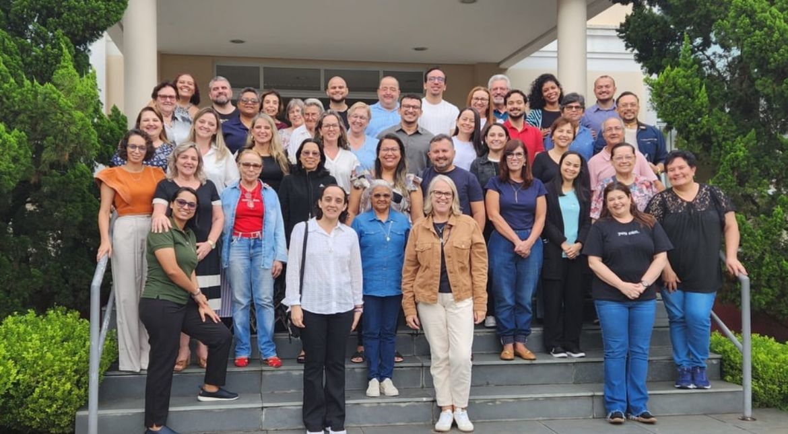

Sistema Pastoral
Gerenciamento da Pastoral com inteligência
O SISDOP transforma a gestão da Pastoral da Criança com dados em tempo real, relatórios automáticos e controle total das ações comunitárias.

O SISDOP transforma a gestão da Pastoral da Criança com dados em tempo real, relatórios automáticos e controle total das ações comunitárias.
Com o SISDOP, a Pastoral alcança resultados expressivos em ações, eficiência e arrecadação a cada ano.
Veja como a Pastoral evoluiu em cada indicador-chave após a adoção do sistema.
Ferramentas pensadas para quem trabalha diariamente com a comunidade.
Registros das visitas, campanhas e ações comunitárias realizadas pelas equipes.


Junte-se às comunidades que já utilizam o sistema e experimente a diferença que a gestão digital faz.
Cadastre-se gratuitamente